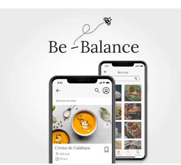
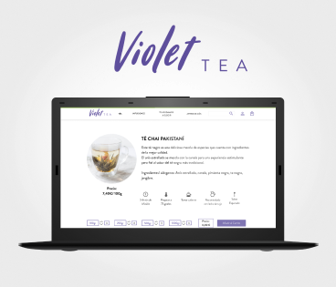
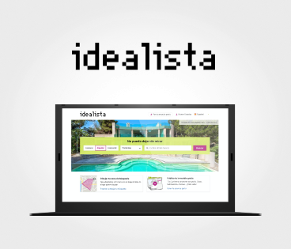
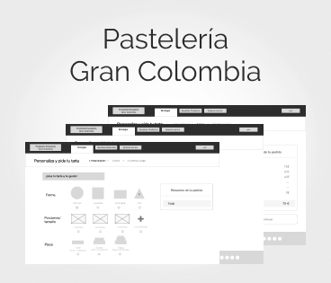
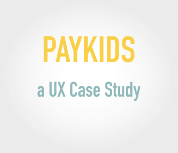
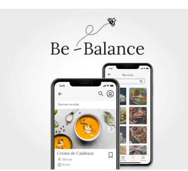
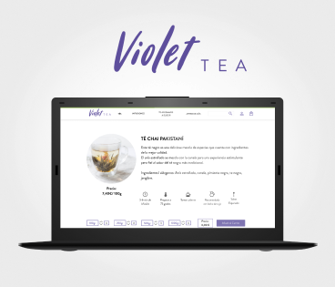
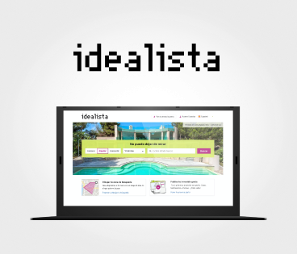
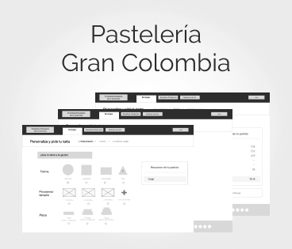
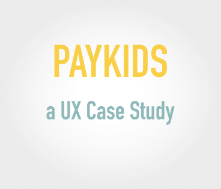

Soy una persona apasionada con todo lo que emprende y extrovertida. Sé que nunca dejaré de querer aprender cosas nuevas y por eso me gusta tanto el diseño UX/UI.
En mi tiempo libre me gusta leer 📚, viajar ✈️, hacer fotos 📷 y últimamente me estoy centrando en aprender ilustración ✍️.